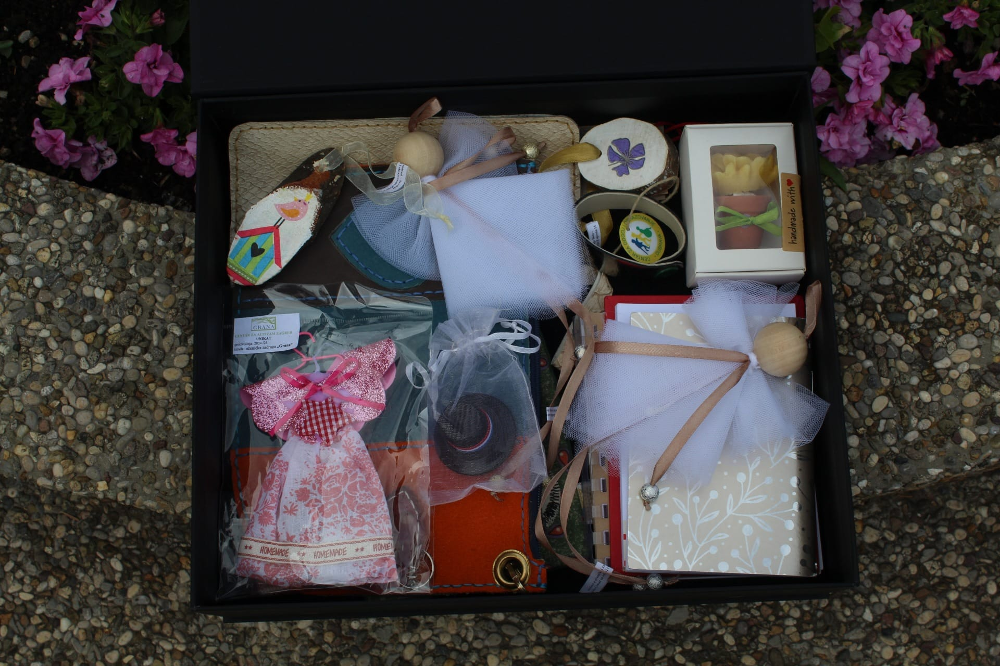
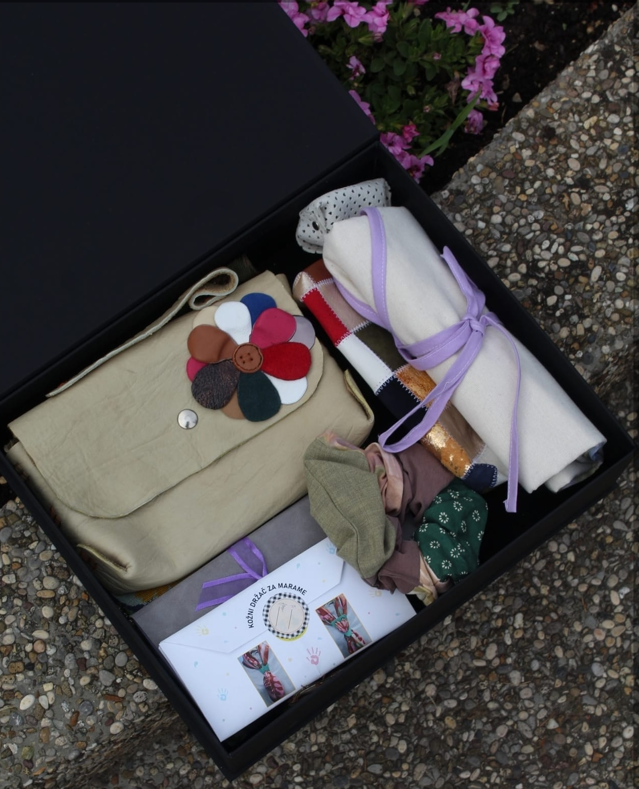
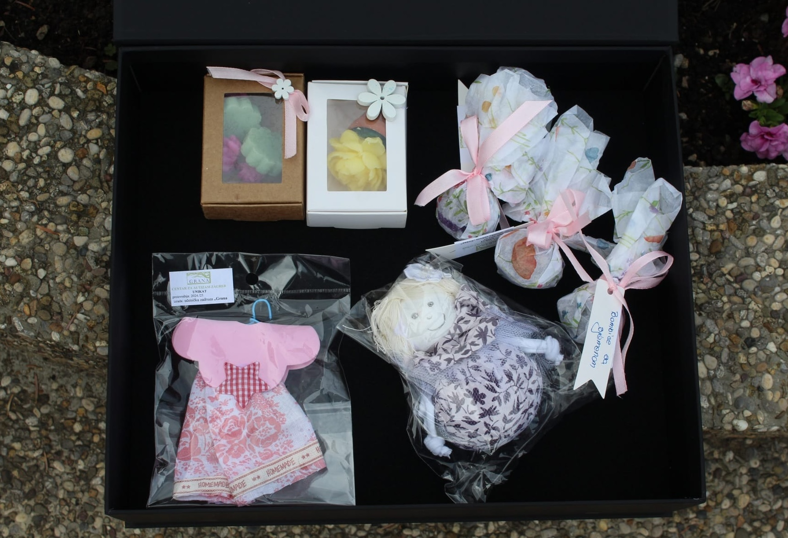
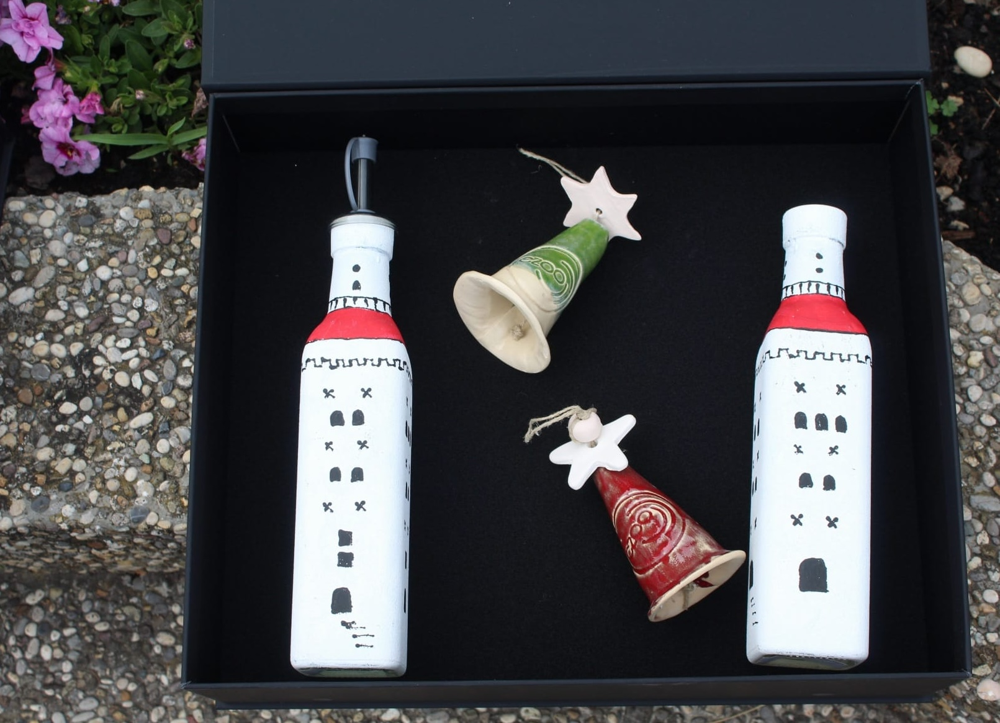
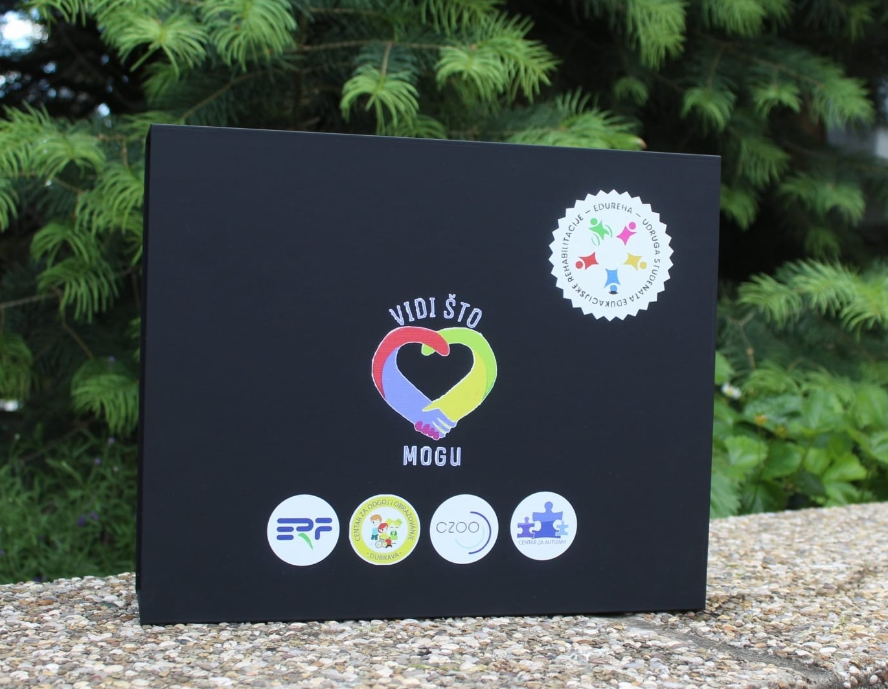
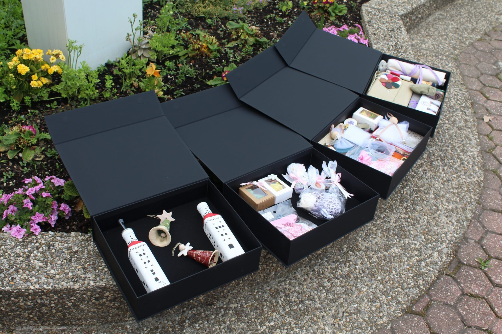

Što trebate znati? Prije nego što krenete u proces, važno je razumjeti što znači zapošljavati osobu s invaliditetom u Hrvatskoj.
Gdje započeti? Informirajte se o mogućnostima i obvezama.
Fokusirajte se na sposobnosti, ne na prepreke. Pripremite se za proces zapošljavanja analizom radnog mjesta i razmišljanjem o potrebnim prilagodbama.
Pronađite pravu osobu za svoj tim.
Formalizacija zaposlenja.
Iskoristite dostupne mjere.
Nakon zapošljavanja, možete ostvariti različite poticaje od strane Zavoda za vještačenje, profesionalnu rehabilitaciju i zapošljavanje osoba s invaliditetom.
Pogledajte dostupne potpore ↓Osigurajte poticajno radno okruženje.
Subvencija plaće za osobu s invaliditetom iznosi 10 % do 70 % osnovice (ovisno o procjeni radne učinkovitosti).
Budući da je minimalna plaća 970 € → 2.910,00 € je maksimalna osnovica za izračun subvencije plaće.
KAKO?
Zavod ovisno o veličini poslodavca sufinancira 50 % do 70 % troškova obrazovanja, a u troškove obrazovanja se ubrajaju trošak upisnine, te trošak prijevoza osobe s invaliditetom i osobe koja joj je pratitelj.
Postotak sufinanciranja iznosi od 50 % za velike poduzetnike, 60 % za srednje poduzetnike, te 70 % za male poduzetnike.
KAKO?
Poticaj se isplaćuje u visini stvarnih troškova prilagodbe, ali najviše do 40 osnovica za jednu osobu s invaliditetom. Osnovica izračuna je minimalna bruto plaća u tekućoj godini.
40 osnovica × 970 € = 38.800 € – maksimalni iznos subvencije troškova za prilagodbu radnog mjesta
KAKO?
Poticaj se isplaćuje u visini stvarnih troškova prilagodbe, ali najviše do 40 osnovica za jednu osobu s invaliditetom. Osnovica izračuna je minimalna bruto plaća u tekućoj godini.
40 osnovica × 970 € = 38.800 € – maksimalni iznos subvencije troškova za prilagodbu uvjeta rada
KAKO?
Osnovica za izračun poticaja iznosi 75 % osnovice uplaćenog doprinosa za obvezno zdravstveno osiguranje za zaposlenu osobu s invaliditetom.
Ako je osnovica = minimalna bruto plaća (970 €) → subvencija = 0,75 × 970 = 727,50 €
Ako osoba ima bruto I = 1.500 € → subvencija = 0,75 × 1.500 = 1.125 €
Ako poslodavac koristi maksimalnu dopuštenu osnovicu (3 minimalne plaće = 2.910 €) → subvencija = 0,75 × 2.910 = 2.182,50 €
KAKO?
Vrstu i opseg potrebne stručne podrške procjenjuje Centar za profesionalnu rehabilitaciju, putem usluge broj 6 Stručna podrška i praćenje na određenom radnom mjestu i u radnom okruženju.
Poslodavac naručuje zaposlenu osobu s invaliditetom na uslugu, pri mjesno nadležnom centru. Centri su dostupni u Osijeku, Rijeci, Splitu i Zagrebu.
KAKO?
Osoba s invaliditetom koja se samozapošljava može na svoje ime ostvariti pravo na potporu za održivost samozapošljavanja osoba s invaliditetom.
Potpora za samozapošljavanje iznosi 132,72 € mjesečno.
KAKO?
Poticaj se ostvaruje za sufinanciranje troškova prijevoza osoba s invaliditetom u svrhu dolaska na posao i odlaska s posla te za potrebe dolaska na mjesto obavljanja djelatnosti i odlaska s mjesta obavljanja djelatnosti.
Trošak prijevoza nadoknađuje se u visini stvarnih troškova prijevoza osobe s invaliditetom.
KAKO?
Poticaj pokriva trošak rada stručnih radnika i radnih instruktora do propisanog minimalnog broja zaposlenih u integrativnim i zaštitnim radionicama.
Za svakog stručnog radnika sufinancira se 100 % osnovice za troškove rada te za radnog instruktora sufinancira se 50 % iste osnovice.
KAKO?
Poticaj mogu ostvariti:
Naknada iznosi 30 % minimalne bruto plaće za svaku osobu s invaliditetom iznad propisane kvote.
30 % × 970 € = 291 € – novčana nagrada iznosi: 291 € po svakoj osobi s invaliditetom iznad kvote
KAKO?
Zahtjev za novčanu nagradu podnosi se na:
Sredstva su namijenjena razvoju novih tehnologija i poslovnih procesa radi zapošljavanja i zadržavanja osoba s invaliditetom. Dodjeljuju se putem javnog natječaja.
Prijaviti se mogu:
KAKO?
Poticaj je namijenjen zaštitnim i integrativnim radionicama.
KAKO?

U projektu sudjeluju studentice Pia Paska-Jaklin, Vana Marović, Ana Ramov, Marija Maraš, Magdalena Martini i Lucija Mužinić
pod mentorstvom prof. dr. sc. Lelie Kiš-Glavaš i asistentice Svee Kučinić, mag. rehab. educ.





